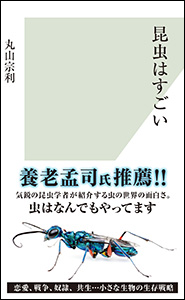
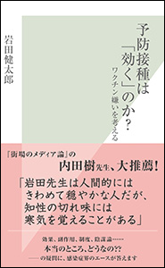
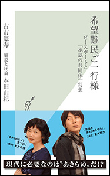

| 光文社新書 100冊セレクション | |
| 光文社新書編集部 | |
ごあいさつ
いつも光文社新書をご愛読いただき、ありがとうございます。
そして、光文社新書電子版１００冊のカタログへようこそ。
このカタログは、光文社新書の中から次の５つの括りで１００冊を選んだものです。
・理系男子、理系女子なら押さえておきたい15 冊
・心とカラダをなんとかしたい。美容、健康のための10 冊
・テレビ・新聞・ラジオでおなじみの教授、先生の書いた25 冊
・明日のビジネスにすぐ役立つ30 冊
・東へ西へ 旅を楽しむための20 冊
光文社新書には、この括りには収まらない、面白い本がまだまだたくさんあります。このカタログをきっかけにして読まれた一冊が、また次の一冊へとつながっていくことを期待しています。
（光文社新書 編集長 三宅貴久）
ご注意
《紹介ページへ》のリンクをクリックすると、その書籍のＡｍａｚｏｎ．ｃｏ．ｊｐの商品詳細ページへとびます。
※ｉＰｈｏｎｅ、ｉＰｏｄ Ｔｏｕｃｈ、ｉＰａｄ用のｋｉｎｄｌｅアプリからは、このリンクはご利用いただけません。「この操作は現在対応していません。」というメッセージが表示される旨、ご了承下さい。
目 次
長沼 毅／藤崎慎吾
遠藤秀紀
遠藤秀紀
藤崎慎吾／田代省三／藤岡換太郎
丸山宗利
ＮＨＫスペシャル深海プロジェクト取材班／坂元志歩
元素周期表で世界はすべて読み解ける〜宇宙、地球、人体の成り立ち〜
吉田たかよし
松原隆彦
土居 守／松原隆彦
菊池 誠／松永和紀／伊勢田哲治／平川秀幸／飯田泰之＋ＳＹＮＯＤＯＳ 編
佐藤健太郎
大鐘良一／小原健右
松永和紀
平 朝彦／徐垣／末廣 潔／木下 肇
杉 晴夫
山口 創
三砂ちづる
磯部 潮
磯部 潮
近藤 誠
岡田尊司
夏井 睦
アゴを引けば身体が変わる〜腰痛・肩こり・頭痛が消える大人の体育〜
伊藤和磨
岩田健太郎
夏井 睦
小幡 績
齋藤 孝
齋藤 孝
齋藤 孝
竹内 薫
城 繁幸
金 哲彦
「生きづらさ」について〜貧困、アイデンティティ、ナショナリズム〜
雨宮処凛／萱野稔人
千住 博
村田吉弘
竹中平蔵
武田双雲
石倉 昇／梅沢由香里／黒瀧正憲／兵頭俊夫
内田 樹
内田 樹
橋爪大三郎
古賀茂明
荻上チキ
日本の大問題が面白いほど解ける本〜シンプル・ロジカルに考える〜
高橋洋一
古市憲寿／本田由紀（解説と反論）
上野先生、勝手に死なれちゃ困ります〜僕らの介護不安に答えてください〜
上野千鶴子／古市憲寿
日本人だけが知らない 日本人のうわさ〜笑える・あきれる・腹がたつ〜
石井光太
門倉貴史
田嶋幸三
勝間和代
友野典男
高間邦男
山根 節
金井壽宏
西林克彦
野地秩嘉
田崎真也
野田智義／金井壽宏
山田雅夫
中田 亨
寺澤芳男
石野雄一
中尾政之
高杉尚孝
石黒 圭
岡嶋裕史
田坂広志
藤巻健史
遠藤 功
遠藤 功
ソフトバンクアカデミア特別講義
ソフトバンクアカデミア特別講義
齋藤 孝
齋藤 孝
酒井 穣
三木義一
さおだけ屋はなぜ潰れないのか？〜身近な疑問からはじめる会計学〜
山田真哉
インクジェット時代がきた！〜液晶テレビも骨も作れる驚異の技術〜
山口修一／山路達也
山口 周
西山 茂
宮元健次
宮元健次
松田忠徳
千住 博／野地秩嘉
宮元健次
斎藤 潤
外尾悦郎
田村 功
わぐりたかし
池上英洋
島村菜津
所澤秀樹
池内 紀
吉村喜彦
斎藤 潤
吉田友和
吉田友和
柏井 壽
柏井 壽
ゆるり 京都おひとり歩き〜隠れた名店と歴史をめぐる〈七つの道〉〜
柏井 壽
理系男子、理系女子なら押さえておきたい15 冊
辺境生物探訪記
生命の本質を求めて
長沼 毅／藤崎慎吾
南極や北極などの極地、深海底、火山、砂漠、地底、宇宙空間......どんな過酷な環境にも生命は存在する 辺境生物学者とともに〝極限環境〟を巡り、生命の謎と本質に迫る。
ニワトリ 愛を独り占めにした鳥
遠藤秀紀
ニワトリは人類とともに何をしでかしているのか――。地球上に一一〇億羽！ 現代の「食の神話」を支える〝家畜の最高傑作〟の実力と素顔を、注目の遺体科学者が徹底公開！
人体 失敗の進化史
遠藤秀紀
「私たちヒトとは、地球の生き物として、一体何をしでかした存在なのか」――あなたの身体に刻まれた「ぼろぼろの設計図」を読み解きながら、ヒトの過去・現在・未来を知る。
深海のパイロット
六五〇〇ｍの海底に何を見たか
藤崎慎吾／田代省三／藤岡換太郎
日本でおよそ20 人、全世界でも40 人前後しかいない深海潜水調査船のパイロット。日々、深海を旅する彼らは、そこで何を見、何を考え、何を体験しているのか？
昆虫はすごい
丸山宗利
人がやっている行動や、築いてきた社会・文明によって生じた物事は、ほとんど昆虫が先にやっている。狩猟採集、農業、牧畜、建築、そして戦争から奴隷制、共生まで、彼らはあらゆることを先取りしてきた。特に面白いのは繁殖行動。相手と出会うためあの手この手を使い、贈り物、同性愛、貞操帯、子殺し、クローン増殖と何でもアリだ。どうしても下に見がちな私たちの思考を覆す、虫たちのあっぱれな生き方を気鋭の研究者が大公開！

ドキュメント 深海の超巨大イカを追え！
ＮＨＫスペシャル深海プロジェクト取材班／坂元志歩
２０１２年夏、小笠原の海で、10 年以上にわたってダイオウイカを追い続けてきた男たちが、奇跡を起こした。誰もなしえなかった撮影を可能にしたのは、いったい何だったのか？ プロデューサー、ディレクター、カメラマン、研究者への膨大な取材で明かされる、撮影までの苦難の道のり。 16 ・８％の高視聴率を記録した「ＮＨＫスペシャル 世界初撮影！ 深海の超巨大イカ」の公式ドキュメント本。
元素周期表で世界はすべて読み解ける
宇宙、地球、人体の成り立ち
吉田たかよし
私たちの体、住んでいる地球、そして宇宙。この世に存在するものはすべて、元素同士の化学反応によりできています。これら自然科学の摂理を凝縮した万能の道具が、周期表です。元素たちが並んだ周期表のルールは、複雑そうに見えてシンプル。縦と横のどっちから攻める？ なぜ人体は取り込む栄養素を間違う？ 元素の化学進化って何？――難しそうだけどなぜか気になる、そんな周期表の仕組みがわかる入門書。
宇宙に外側はあるか
松原隆彦
21 世紀の現代、人類は観測技術の発達などによって宇宙を見る目が大きく開かれつつある。いま、宇宙の何がわかっていて、何がわかっていないのか？ 宇宙の全体像とは？ 宇宙の「外側」とは？ 「奇妙な謎」に包まれた人宇宙を人類はどこまで知ることができるのか？ 気鋭の研究者が、誰もが一度は考えたことがある「究極の問い」に真正面から迫る、宇宙論のフロンティアへと旅立つ一冊。
宇宙のダークエネルギー
「未知なる力」の謎を解く
土居 守／松原隆彦
宇宙とは、いかなる存在なのか――。宇宙が膨張していることは以前から知られている。しかし、膨張の速度はだんだん遅くなると考えられていた。ところが、20 世紀の終盤、宇宙の膨張は減速しているどころか加速していることが明らかになった。これは、宇宙の中に、膨張を加速させる「未知の力」が働いていることを意味する。「宇宙の真の姿」とは？ 最新の宇宙論と天文学が迫る、知的刺激にあふれた一冊。
もうダマされないための「科学」講義
菊池 誠／松永和紀／伊勢田哲治／平川秀幸／飯田泰之＋ＳＹＮＯＤＯＳ 編
科学とはなにか？ 科学と科学でないものの間は？ 科学不信はなぜ生まれるのか？ 科学を報じるメディアの問題とは？ 科学を上手に使うには？――学校が教えてくれない科学的な考え方を、稀代の論客たちが講義形式でわかりやすく解説。３・11 以降の科学に対するモヤモヤがきれいになくなる一冊。

「ゼロリスク社会」の罠
「怖い」が判断を狂わせる
佐藤健太郎
現代の我々を襲うリスクは、歴史や経験からは教訓を引き出せないものばかりである。何が、どれくらいの量あると、どれだけ危険なのか。イメージや先入観、本能の発する恐怖に惑わされずに、一人一人が定量的に考え、リスクを判定していくにはどうしたらよいのか。これ以上、身体的・経済的損失を出さないために......本書では、この時代を乗り切ってゆくために必要な「リスクを見極める技術」について、気鋭の科学ライターが教える。
ドキュメント 宇宙飛行士選抜試験
大鐘良一／小原健右
２００８年２月、日本で10 年ぶりとなる宇宙飛行士の募集・選抜が行われた。本書は、この選抜試験の取材を日本で初めて許され、さらに候補者10 人に絞られた最終試験で、その一部始終に密着することに成功したＮＨＫの番組スタッフによるドキュメンタリー。10 人の行動をつぶさに追いながら、宇宙という極限の状況下で自らの命を賭け、かつ他の乗組員の命をも預かる宇宙飛行士とはどういう職業なのか、その資質と人間力に迫る！
メディア・バイアス
あやしい健康情報とニセ科学
松永和紀
世間に氾濫するトンデモ科学報道。センセーショナリズム、記者の思い込み、捏造、それを利用する企業や市民団体......。メディア・バイアスの構造を解き明かし、科学情報の真贋の見極め方、リスク評価の視点を解説する。
地球の内部で何が起こっているのか？
平 朝彦／徐垣／末廣 潔／木下 肇
なぜ巨大地震は起こるのか？ 地球だけに見られる花崗岩質地殻はどのようにしてできたのか？ 地下微生物は地球環境でどのような役割を果たしているのか？ 地球の生命はどのように誕生したのか？ 大陸移動説、海洋底拡大説、プレートテクトニクス、地球システム科学、マントルトモグラフィー、プルームテクトニクス、全地球史解読などをふまえ、地球科学の最先端の見取図を示す。地球科学入門書としても最適。カラー口絵つき。
論文捏造はなぜ起きたのか？
杉 晴夫
世界を騒がせた、理化学研究所ＳＴＡＰ細胞事件。この背後には日本の歪んだ科学行政があった。外圧によってもたらされた、分子生物学・再生医療分野の盛況と、潤沢すぎる研究資金。大学の独立行政法人化により伝統と研究の自由を蹂躙され、政府・産業界の使用人と化した大学研究者たち。学術雑誌の正体と商業主義......など、研究者を論文捏造に走らせる原因の数々を、81 歳の国際的生理学者が、科学史を交えつつ鋭く指摘する。
心とカラダをなんとかしたい。美容、健康のための10 冊
子供の「脳」は肌にある
山口 創
「心」はどう育てたらよいのか――。どんな親でも抱く思いに、身体心理学者が最新の皮膚論を駆使して答える。子供の「心」をつかさどる脳に最も近いのは、じつは肌であった。
オニババ化する女たち
女性の身体性を取り戻す
三砂ちづる
行き場を失ったエネルギーが男も女も不幸にする!? 女性保健の分野で活躍する著者が、軽視される性や生殖、出産の経験の重要性を説き、身体の声に耳を傾けた生き方を提案する。
発達障害かもしれない
見た目は普通の、ちょっと変わった子
磯部 潮
脳の機能障害として注目を集める高機能自閉症やアスペルガー症候群を中心に、発達障害の基礎知識とその心の世界を、第一線の精神科医が、患者・親の立場に立って解説する。
人格障害かもしれない
どうして普通にできないんだろう
磯部 潮
何か過剰な人たちの闇と光――人が自分から離れていくのはどうしてだろう？ 現代に生きる私たち誰もが感じる「心の闇」を解き明かす。
近藤先生、「がんは放置」で本当にいいんですか？
近藤 誠
１．がんの手術は寿命を縮めるだけ、２．抗がん剤は効かない、３．検診は無意味、４．がんは本物ともどきに分かれる――私が打ち立てた理論への疑問・反論に徹底的にお答えします。がんになったらどうするのが一番の得策か、どう過ごしていくのが最も幸せなのか、日本のがん治療に真っ向から異議を唱えてきた孤高の学者が、平穏に天寿を全うするために身につけるべき知識と考え方を指南！
愛着障害
子ども時代を引きずる人々
岡田尊司
「人に気をつかいすぎる」「親しい関係が苦手」「依存してしまいやすい」「発達障害と似たところがある」「意地っ張りで損をする」――その裏側には、愛着の問題がひそんでいる！ ３分の１の大人が「愛着」に問題を抱えていると言われる今、人格形成の土台ともいうべきこの「愛着」を軸に、生きづらさやうつ、依存症などの問題を克服するうえで、新しい知見を提供する。
炭水化物が人類を滅ぼす
糖質制限からみた生命の科学
夏井 睦
光文社新書のロングセラー『傷はぜったい消毒するな』でも有名な「湿潤療法」のパイオニアが、自ら体験した糖質制限ダイエットをきっかけに、栄養素としての糖質の性質や、人類の糖質摂取の歴史、カロリーという概念やその算出法のいいかげんさ、ブドウ糖からみえてくる生命の諸相や進化、さらには糖質からみた農耕の起源について、新説を展開しながら様々に考える。著者の元に寄せられる糖質セイゲニストからの体験談も紹介。
アゴを引けば身体が変わる
腰痛・肩こり・頭痛が消える大人の体育
伊藤和磨
腰痛患者２８００万人！ 日本から腰痛をなくすには？ １８００人を超える慢性痛患者を診てきたトレーナーが教える、「図解」正しいカラダの使い方。アゴを引けば、痛みが消える、呼吸が変わる、身体が変わる。そして、人生も変わる！
予防接種は「効く」のか？
ワクチン嫌いを考える
岩田健太郎
効果、副作用、制度、陰謀論......本当のところどうなの？の疑問に感染症界のエースが答えます。ワクチン問題の好き嫌いと正邪を切り離し、読者を新たな視点に導く新しいワクチン論。

傷はぜったい消毒するな
生態系としての皮膚の科学
夏井 睦
ケガをしたら消毒して乾かす、が世間の常識。しかし実は消毒は「傷口に熱湯をかけるような行為」であり、傷は消毒せず乾燥させなければ、痛まず早くきれいに治るのである。今注目の「湿潤治療」を確立した医師が、理論や治療法を解説。なぜ大病院では痛みと後遺症を強いる旧来の治療が行われるのかを検証。さらに生物進化の過程を辿りつつ見直した、皮膚という臓器の持つ驚くべき能力について、意欲的な仮説を展開しながら解説する
テレビ・新聞・ラジオでおなじみの教授、先生の書いた25 冊
すべての経済はバブルに通じる
小幡 績
リターンを追求する投資家がリスクに殺到する以上、必ずバブルが起きる――新しいバブル「リスクテイクバブル」の正体とその影響を、学者であり個人投資家でもある著者が解明。
座右のゲーテ
壁に突き当たったとき開く本
齋藤 孝
「小さな対象だけを扱う」「日付を書いておく」「論理的思考を封印する」――本書では、ゲーテの〝ことば〟をヒントにして、知的で豊かな生活を送るための具体的な技法を学ぶ。
座右の諭吉
才能より決断
齋藤 孝
「浮世を軽く視る」「極端を想像す」「まず相場を知る」「喜怒色に顕わさず」――類い希なる勝ち組気質の持ち主であった福沢諭吉の珠玉の言葉から、人生の指針を学ぶ。
座右のニーチェ
突破力が身につく本
齋藤 孝
規制や抑圧を打ち壊し、突破したニーチェのことばから、保身や恐れを克服し現代を生き抜くヒントを学ぶ。心に溜まった垢を洗い流す「座右」シリーズの第三弾。
９９・９％は仮説
思いこみで判断しないための考え方
竹内 薫
飛行機はなぜ飛ぶのか？ 科学では説明できない――科学的に一〇〇％解明されていると思われていることも、実はぜんぶ仮説にすぎなかった！ 世界の見え方が変わる科学入門。
若者はなぜ３年で辞めるのか？
年功序列が奪う日本の未来
城 繁幸
仕事がつまらない。先が見えない――若者が仕事で感じる漠然とした閉塞感。ベストセラー『内側から見た富士通 「成果主義」の崩壊』の著者が若者の視点で探る、その正体とは？

３時間台で完走するマラソン
まずはウォーキングから
金 哲彦
マラソンは誰でも完走できる！ シューズ選びから、ウォーキングによる基礎体力づくり、効率のよいフォーム・練習法、レースマネジメントまで、ロジカルかつわかりやすく解説。
「生きづらさ」について
貧困、アイデンティティ、ナショナリズム
雨宮処凛／萱野稔人
多くの人が「生きづらさ」をかかえて生きている。これは現代に特有のものなのか？ 不安定な労働や貧困、人間関係や心の病など、「生きづらさ」を生き抜くヒントを探っていく。
美は時を超える
千住博の美術の授業２
千住 博
アルタミラの洞窟画から、モネ、水墨画、良寛・芭蕉、メトロポリタン美術館、ウォーホル、現代美術まで――時空を超えて美の本質をさぐる。二一世紀に生きるための芸術論。
京都料亭の味わい方
村田吉弘
「料亭は本来飯屋であり、敷居の高いところではありません。普通の人が、ちょっと贅沢しよか、という時に行ける場所です」――京都「菊乃井」の主人が語る、料亭の魅力のすべて。
経済古典は役に立つ
竹中平蔵
『国富論』も『資本論』もそうだったのか！ 狭義の学問としてではなく、スミス、ケインズらの問題解決力に焦点を当てる。政策を知る著者ならではの、いま役に立つ読み方。
「書」を書く愉しみ
武田双雲
音楽家とのパフォーマンス書道や斬新な個展など、独自の創作活動を展開する武田双雲が伝えるまったく新しい書道入門。時代の流れに逆らうからこそ、いま花開く書の魅力。
東大教養囲碁講座
ゼロからわかりやすく
石倉 昇／梅沢由香里／黒瀧正憲／兵頭俊夫
東京大学教養学部の人気講座「囲碁で養う考える力」が一冊の本に！ 三人のプロ棋士が初心者にもわかりやすく囲碁の手ほどきを行う。最高の思考力、先を読む力を身につける！
修業論
内田 樹
著者が長年続けている合気道修業の目的は「あらゆる敵をたおす」ことではない。「自分自身の弱さのもたらす災い」を最小化し、他者と共生・同化する技術を磨く訓練の体系である。道場での稽古を「楽屋」とし、生業の場を「舞台」とする。新たな学びを阻止する無知や弱さを「居着き」と捉え、これを解除し、守るべき私を廃棄する。すると修業は自分を、予想もしなかった場所へ連れていく――。修業とは、強さとは......正面から問う。
街場のメディア論
内田 樹
テレビ視聴率の低下、新聞部数の激減、出版の不調......、未曽有の危機の原因はどこにあるのか？ 「贈与と返礼」の人類学的地平からメディアの社会的存在意義を探り、危機の本質を見極める。内田樹が贈る、マニュアルのない未来を生き抜くすべての人に必要な「知」のレッスン。神戸女学院大学の人気講義を書籍化。
世界は宗教で動いてる
橋爪大三郎
世界を読み解くには、宗教が最大の補助線になります。ヨーロッパ人もインド人も中国人も、当人たちは意識していなくても、長い歴史をへたキリスト教、ヒンドゥー教、儒教の発想や行動様式に支配されています。宗教を理解すれば、グローバル世界を読み解く最大の鍵が手に入るのです。――世界の宗教について比較研究を行ってきた著者が、主要な文明ごとに、社会と宗教の深いつながりをわかりやすく解説！
官僚を国民のために働かせる法
古賀茂明
なぜ私は１年９ヶ月もの間「干され」続けたのか。退職の真相から野田政権の本質分析まで渾身の語り下ろし。官僚よ、省益ばかり優先したり天下りポストの確保に奔走しないで、今こそ「公僕意識」を取り戻せ！――霞が関を去った改革派官僚の旗手が満を持して立言する、日本再生の真の処方箋。
【目次】１章 なぜ「国家公務員制度改革」が進まないのか／２章 官僚たちの「生態白書」／３章 〝内向き思考〟が日本を滅ぼす（以下略）
検証 東日本大震災の流言・デマ
荻上チキ
チェンメ、リツイート（ＲＴ）......災害流言という人災！ 流言やデマはどのように生まれ、どのように広がるのか？ 真偽を確認するにはどうすればいいのか？ 「有害物質の雨が降る？」「被災地で外国人犯罪が増えている？」「あの政治家がこんな失言をした？」「関西電力の節電呼びかけチェーンメール」など、東日本大震災に際して広まった実例をもとに、そのメカニズムを解説し、ダマされない・広めない基礎知識を伝授。
日本の大問題が面白いほど解ける本
シンプル・ロジカルに考える
高橋洋一
タカハシ先生に聞いてみよう！
・デフレと円高はなぜ良くないの？
・借金が９７３兆円もあって、日本は大丈夫なの？
・年金は積立方式にすればいいんじゃないの？
・再分配政策がうまくいけば、経済成長しなくてもいいのでは？
・スウェーデンみたいに、消費税を年金の財源にすればいい？
・法人税ゼロは大企業優遇じゃないの？
・地方分権って、いったいどういう意味があるの？
希望難民ご一行様
ピースボートと「承認の共同体」幻想
古市憲寿／本田由紀（解説と反論）
怒る老人、泣く若者――。本書は、「世界平和」や「夢」を掲げたクルーズ船・ピースボートに乗り込んだ東大院生による、社会学的調査・分析の報告である。なんらかの夢や希望をもって乗り込んだはずの船内で、繰り広げられる驚きの光景。それは、日本社会のある部分を誇張した縮図であった。若者の「貧しさ」と「寂しさ」への処方箋としてもちあげられる「承認の共同体」の可能性と限界を探っていく。解説と反論、本田由紀。

上野先生、勝手に死なれちゃ困ります
僕らの介護不安に答えてください
上野千鶴子／古市憲寿
ベストセラー『おひとりさまの老後』を残し、東大を退職した上野千鶴子元教授。帯の名文句「これで安心して死ねるかしら」に対し、残された教え子・古市憲寿が待ったをかける。少子高齢化社会で、団塊世代による負の遺産を手渡されると感じている子世代の先行きは不透明。だとすれば、僕たちが今からできる心構えを教えてほしい、と。30 歳以上歳の離れた２人の社会学者の対話をきっかけに、若者の将来、この国の老後を考える。
日本人だけが知らない 日本人のうわさ
笑える・あきれる・腹がたつ
石井光太
本書では、海外で語られている噂をご紹介しながら、私たち日本人がどのように見られ、語られ、描かれているのかを探っていきます。日本人サラリーマンはどんなふうに冷笑されているのか、日本のスポーツやアニメやポルノは海外でいかに受け止められているのか。それが真実であろうとなかろうと、世界で噂される日本のイメージを直視することこそが、日本のアイデンティティを考えることにもつながるのです。
統計数字を疑う
なぜ実感とズレるのか？
門倉貴史
「積極的な人」、「大人しい人」、「怒りやすい人」、「泣きやすい人」、「せっかちな人」、「のんきな人」など、人間一人一人が独特の性格や行動パターンを持っているのと同じように、ひとつひとつの統計も、「上振れしやすい統計」、「下振れしやすい統計」、「変動の大きい統計」、「変動の小さい統計」など、独特のクセや動きのパターンを持っているのだ。具体的事例で統計センスを身につける本。
「言語技術」が日本のサッカーを変える
田嶋幸三
世界との差は判断力であり、その基盤は論理力や言語力だ！公認指導者ライセンスや、ＪＦＡアカデミー福島のエリートプログラムで始まった「ピッチの外」の画期的トレーニング。
お金は銀行に預けるな
金融リテラシーの基本と実践
勝間和代
私たちは、自分のお金を労働力で稼ぐ、自分で稼いだお金を消費する、というやり方にはとても慣れているのですが、自分のお金が自分以外のところでお金を稼いでくる、あるいは自分で稼いだお金を消費という形ではなく投資をするという考え方には、今一つなじみきれていません。自分のお金は自分でコントロールしよう。年金不安、所得格差が進む中、私たちが身につけなければならない能力とは？ 第一人者が分かりやすく解説。
明日のビジネスにすぐ役立つ30 冊
行動経済学
経済は「感情」で動いている
友野典男
人は合理的である、とする伝統経済学の理論は本当か。現実の人の行動はもっと複雑ではないか。重要な提言と詳細な検証により新たな領域を築く行動経済学を、基礎から解説する。
学習する組織
現場に変化のタネをまく
高間邦男
「変わりたい」を実現するには？ 多くの企業の組織変革に関わってきた著者が、正解なき時代の組織づくりのノウハウを解説。「何をするか」ではなく、「どう進めるか」が変革のカギ！
経営の大局をつかむ会計
健全な〝ドンブリ勘定〟のすすめ
山根 節
会計の使える経営管理者になりたかったら、いきなりリアルな財務諸表と格闘せよ。経理マン、会計士が絶対に教えてくれない経営戦略のための会計学。
組織変革のビジョン
金井壽宏
「道に迷ったときは、どんな古い地図でも役に立つ」「忙しいから絵が描けないのではなく、描けていないから忙しいだけだ」――本当に意味のある変革とは？ 根本から考える。
わかったつもり
読解力がつかない本当の原因
西林克彦
文章を一読して「わかった」と思っていても、よく検討してみると、「わかったつもり」に過ぎないことが多い。「わからない」より重大なこの問題をどう克服するか、そのカギを説いていく。
企画書は１行
野地秩嘉
相手に「それをやろう」と言わせる企画書は、どれも魅力的な一行を持っている――。自分の想いを実現する一行をいかに書くか。第一人者たちの「一行の力」の源を紹介する。
接待の一流
おもてなしは技術です
田崎真也
なぜ日本人男性は「もてなしベタ」なのか？ 世界一ソムリエが、必ず相手に喜ばれるもてなし術を「接待編」と「デート編」に分けて解説。これをマスターすれば、人生が変わる！
リーダーシップの旅
見えないものを見る
野田智義／金井壽宏
内なる声を聴き、ルビコン川を渡れ！ 世界がまったく違って見えてくる――「不毛なる忙しさ」に陥っているすべての現代人へ。一歩を踏み出すきっかけとなる書。
「事務ミス」をナメるな！
中田 亨
「クリック一つで大損失」の時代――事務作業者にはこれまでになく高い信頼性が求められている。新しい視点から「事務ミス」を分析し直し、「ミスに強い組織」を作る具体策を提示する。
スピーチの奥義
寺澤芳男
スピーチの出来・不出来は長さとテーマの数に反比例する！ 参院議員、野村證券副社長、経企庁長官、ＭＩＧＡ長官......日本で唯一、政財官＆世界で活躍した著者が「心を掴む技」を伝授。
ざっくり分かるファイナンス
経営センスを磨くための財務
石野雄一
「セミナーに通ったり、参考書を何冊も読んだけどまったく理解できない」――とかく難しいと思われがちな企業財務のポイントを、気鋭の財務戦略コンサルタントがざっくり解説。
失敗は予測できる
中尾政之
人間、生きている限り、自分の周りに失敗はツキモノである。大事故に至る失敗から日常生活で起きる失敗まで、会社の不祥事からリーダーのミスまで、豊富な事例から何を学ぶか。
文章は接続詞で決まる
石黒 圭
「読む人にわかりやすく印象に残る文章を書くために、プロの作家はまず、接続詞から考えます」。ふだん何気なく使っている接続詞の具体的な役割を知り、効果的に使う技術を磨く。
数式を使わないデータマイニング入門
隠れた法則を発見する
岡嶋裕史
インターネット上の玉石混淆の情報の中から「玉」を発見するには？ グーグル、アマゾン――Ｗｅｂ２．０時代に必須の知識・技術を本質から理解できる、世界一簡単な入門書。
知性を磨く
「スーパージェネラリスト」の時代
田坂広志
なぜ、高学歴の人物が、深い知性を感じさせないのか？／頭の良い若者ほど、プロフェッショナルになれない理由／「垂直統合」の知性を持つスーパージェネラリスト／スーパージェネラリストが持つ「七つの知性」／あなたは、どの「人格」で仕事をしているか？／なぜ、多重人格のマネジメントで、多彩な才能が開花するのか？ ――目の前の現実を変革する「知の力」＝「知性」を磨くための田坂流知性論。
改訂新版 藤巻健史の実践・金融マーケット集中講義
藤巻健史
「この本は、人から聞いたことや、他人の書いたものをまとめたものではありません。私自身の経験から『金融市場で生きて行くには、これだけの知識が必要だ、資産運用をするつもりならこれだけの知識は必要だ』と思ったことだけを書きました」（まえがきより）――為替、先物、スワップ、オプションなど、ビジネスマンから個人投資家まで、本当に使える金融知識を、「伝説のディーラー」が伝授。データ刷新、大幅加筆の改訂版！
経営戦略の教科書
遠藤 功
「経営戦略は企業経営において最も重要な根幹部分です。理に適った経営戦略なしに、よい経営をすることはできません。端的に言えば、経営戦略とは経営の『意思』であり、多様なステークホルダーとの『約束』です。どのような会社を目指すのか、どのような存在になりたいのかを意思表示し、株主や顧客というステークホルダーと約束するものが経営戦略なのです。」早稲田大学ビジネススクールで学生満足度Ｎｏ．１の白熱講義を紹介！
現場力の教科書
遠藤 功
「オペレーション」という言葉の意味は広く、業界によってもニュアンスは異なる。しかし、全てに共通しているのは「オペレーション」を担うのは「現場」だということ。どんなに優れた経営戦略を立てても「オペレーション」、すなわち戦略の実行を担う「現場」が弱ければ意味がない。戦略と実行は一体だという認識が不可欠だ。本書は計18 回の講義で構成され、毎回、具体的な企業の「現場」を取り上げながら「現場力」の本質に迫る！
孫正義 リーダーのための意思決定の極意
ソフトバンクアカデミア特別講義
〈質問〉始めたばかりで巨額の赤字を出している事業に人員を補充したい。あなたがリーダーなら、どちらを選びますか？ Ａ・社員を大量採用して、事業の急拡大を図る Ｂ・アルバイトや派遣社員などを少しずつ補充し、経営リスクを低減させる／ 経営の現場で実際にあった状況を元にした30 の質問に答え、孫正義氏のリーダーとしての意思決定プロセスを学ぶ。意思決定の背後にある「孫の二乗の兵法」（最新版）も孫氏自ら解説。
孫正義 危機克服の極意
ソフトバンクアカデミア特別講義
〈問〉リーマンショックにより、世界中の金融市場が大打撃を受け、ソフトバンクもその例外ではなかった。借り入れの大きさから経営を不安視され、株価が急降下した。自らの責任ではない出来事による経営悪化を受けての決算発表。どのような姿勢で臨むべきか。――孫正義が直面した10 の危機をケーススタディに、その乗り越え方を解説。第２部はツイッターを中心とした孫正義名言集。
「意識の量」を増やせ！
齋藤 孝
あなたのまわりに、こんな人はいませんか？・ミーティング中、一言も発言しないでボーっとしている・頭はいいし、よく勉強しているようだが、仕事となると使えない・反省しないし謝らない・精神的に弱く、仕事を放り投げて逃げてしまうんじゃないかと心配になる――それはすべて、「意識の量」が足りないからだ。意識の量さえ増やせれば、誰でも楽に、できる人になれる。齋藤孝が提案する新しい成長法、トレーニング方法を大公開。
「対面力」をつけろ！
齋藤 孝
「１対１」に強くなる!!
○相手に臍を向けよう
○アイコンタクトのコツは「右目を２秒」
○とっさの一言は「15 秒感覚」で鍛える
○どんなときにも「上機嫌」習慣
○沈黙の間が怖くなくなる方法
○オウム返しは共感の第一歩
――「感じのいい人」が必ず実践している46 の対面力向上メソッドを公開！
「日本で最も人材を育成する会社」のテキスト
酒井 穣
今日においては、ヒトこそが企業経営に残された最後の開発ターゲットである。ベストセラー『はじめての課長の教科書』の著者が、フリービット株式会社での実務経験に基づいて、人材育成プログラムの論理的な背景と、プログラム導入の実践上のポイントを概説する。経営の行き詰まりに直面している経営者や人事部、さらには自らの成長戦略を考える若手のビジネスパーソンにとって有益なヒントになるだろう。
給与明細は謎だらけ
サラリーマンのための所得税入門
三木義一
「源泉徴収って何？」「家族手当には税金がかかるの？」「会社が倒産したら税金はどうなる？」「サラリーマンに必要経費はあるの？」......。給与明細と所得税を税法の第一人者が解説。
さおだけ屋はなぜ潰れないのか？
身近な疑問からはじめる会計学
山田真哉
あの店はいつも客がいないのになぜ潰れないのだろうか？――この本では、日々の生活に転がっている「身近な疑問」から考えることで、会計の重要なエッセンスを学んでいきます。細かい財務諸表は出てきませんし、専門用語もそれほど多くありませんので、気を楽にして、ひとつの読み物として読んでみてください。「会計が嫌い」「会計が苦手」「会計を学んでも意味がない」と思っている方でも、きっと会計に対する見方が変わるはず。
インクジェット時代がきた！
液晶テレビも骨も作れる驚異の技術
山口修一／山路達也
相次ぐ電器メーカーの大損失、国内製品の競争力低下などで日本のものづくりは転換期を迎えている。起死回生の鍵となるのが、インクジェット技術。精細な液体の粒を「飛ばして」「積み重ねる」ことで、多種多様な一点モノをつくることができるのだ。食べられるお菓子、マイホームの壁、電子回路......。はてはＤＮＡチップや人工臓器などの医療にまでおよぶ。そんなライフスタイルすら変えうる技術革命が、はじまりつつある。
世界で最もイノベーティブな組織の作り方
山口 周
日本人の高い創造性が、なぜイノベーションにつながらないのか？ イノベーションを生み出すための組織とリーダーシップのあり方を、組織開発が専門のヘイグループに所属する著者が、豊富な事例やデータをまじえながら、柔らかな文体で解き明かす。
出世したけりゃ 会計・財務は一緒に学べ！
西山 茂
欧米の経営者にとって、会計と財務の基本は当然身に着けなければならないが、日本の経営者は必ずしも会社の数字に強くない。それは、両分野が日本では個別に学ばれ、現場社員が短期間で身に着けるのは困難な状況になっていることも一因だ。本書では、会社の数字とは接点がなかったが現場をよく知る優秀な社員向けに、経営幹部になるのに最低限必要な会計と財務のポイントを凝縮。これだけ押さえれば、誰でもトップ経営者になれる！
東へ西へ 旅を楽しむための20 冊
京都名庭を歩く
宮元健次
日本一の観光地・京都でとりわけ見所の多い珠玉の庭園群。最新の研究成果を盛り込みながら、世界遺産を含む27 名庭を新たな庭園観で描く。庭園リスト・詳細データ付き。
神社の系譜
なぜそこにあるのか
宮元健次
「八百万の神」と言い表されるように、日本には多様な神が祀られている。神社とは何だろうか。伊勢から出雲、靖国まで、「自然暦」という新視点から神々の系譜について考える。
温泉教授の温泉ゼミナール
松田忠徳
塩素漬けの危険な循環風呂が、ホンモノの温泉を駆逐する！ 全国４３００湯を制覇した著者が教える温泉の真実とその選び方。キーワードは「源泉１００％流しっぱなし」。
ニューヨーク美術案内
千住 博／野地秩嘉
美術の町・ニューヨークで、野地秩嘉が画家・千住博と一緒に作品を読み解いていく、今までにない最高に贅沢な美術ガイド。この一冊で、美術館がたちまち楽しい場所に変わる。
日本《島旅》紀行
斎藤 潤
海がきれい。空気がきれい。都会に疲れた。静かな所で過ごしたい。誰も知らない島へ――。北の島から南の島、なにもないのにもう一度行きたい島まで、島旅にハマる。
ガウディの伝言
外尾悦郎
１２０年以上、建設が続けられているサグラダ・ファミリア。形、数字、謎の部屋......。天才ガウディの視点に立ち、28 年間、彫刻をつくってきた著者が、隠されたメッセージを読み解く。
ベルギービールという芸術
田村 功
同じ味は二つとない、多彩で多様なベルギービール。天才的な閃きとテクニックで造られた逸品は、五感で味わうべき芸術品である。そんな奥深い世界を、豊富な写真で解説。
地団駄は島根で踏め
行って・見て・触れる《語源の旅》
わぐりたかし
日本語は現場で起きている――言葉が生まれた土地におもむいて、探偵気分で語源の謎を調査・推理・解決。いざ、うんちくや雑学でおわらせない、日本語の奥深さにふれる旅へ。
イタリア 24 の都市の物語
池上英洋
世界中の旅行者を魅了する、ヨーロッパでも屈指の人気を誇るイタリア。24 都市を厳選し、さまざまな歴史上のエピソードを紹介しながら、「イタリアを歩く楽しみ」を伝える。

スローシティ
世界の均質化と闘うイタリアの小さな町
島村菜津
郊外型の巨大なショッピングモール、世界中同じような映画ばかり上映するシネコン、画一的な住宅街、駅前や国道沿いに並ぶチェーン店......。私たちにこの世界の均一化から逃れるすべがあるのだろうか。世界のどこにもない個性的な町など、おとぎ話に過ぎないのか。グローバル社会の中で、人が幸福に暮らす場とは何かということを問い続け、町のアイデンティティをかけて闘うイタリアの小さな町の人々の挑戦に、その答えを探る。
日本の鉄道 乗り換え・乗り継ぎの達人
所澤秀樹
鉄道の「乗り換え・乗り継ぎ」にこだわり、その歴史から名所的乗り換え駅、乗車券やＩＣカードの使い方などの実践的知識まで学べる鉄ちゃん垂涎、初心者にもおトクな一冊!!
食べる、飲む、聞く 沖縄 美味の島
吉村喜彦
旅は、沖縄の台所・那覇の牧志公設市場から始まった。宮廷料理から百年古酒まで、島バナナ、タコスから南米料理まで。人と出会い、身体で感じながら見えてきたものは――。
沖縄・奄美《島旅》紀行
斎藤 潤
沖縄と奄美は、日本ではない。少なくとも、文化的には。ぼくは、そう確信している――。ガイドブックでは触れない南島の秘める多様な魅力を、その素顔を通して伝える。
10 日もあれば世界一周
吉田友和
航空会社がアライアンスと呼ばれる連合を組み、手頃な料金で世界を周遊できる「世界一周航空券」を売り出したことから、世界一周がどんどんお手軽になってきた。転職の合間、新婚旅行、リフレッシュ休暇など、忙しい現役社会人でも10 日から２週間程度の休みを確保できるチャンスはあるだろう。同じ世界一周といっても、長期と短期では旅行のスタイルや内容は異なる。今回は短期に絞り込み、その実現方法とコツを教える。
３日もあれば海外旅行
吉田友和
海外個人旅行というといわゆるバックパッカーを想像しがちだが、ステレオタイプの旅行者像だけでは語れなくなってきた。安宿ではなく高級ホテルを泊まり歩きながらも、食事は屋台で。現地の人とふれあいながらもスマホで情報収集し、友達とすぐにウェブで感動を共有し合う。鉄道の旅とＬＣＣをうまく組み合わせる......なんて旅の形があってもいい。休みが少ないからこそ、旅は工夫次第で面白くなる。新しい旅の技術を一挙公開。
日本百名宿
柏井 壽
「ニッポンを、知る旅は宿にあり！」年間、全国津々浦々の旅館やホテルに２５０泊する著者が選ぶ、温泉、絶景、美食の宿１００軒。手軽に泊まれるビジネスユーズの贅沢ホテルから、お籠りリゾート、新スタイルの日本旅館、伝統息づく軽やかな老舗まで、泊まって良かった宿のみしか載せていません。地域ごとにおすすめ宿を紹介しているので、ふとどこかに行きたいと思い立った時に使える完全保存版。もう宿選びには困らない。
おひとり京都の愉しみ
柏井 壽
京の路地裏、隠れた名刹、お手頃ランチ、ひとりで行ける割烹に、手軽な宿。ひとり旅だからこそ楽しめる、そんなスポットを紹介。京都通になれる市内詳細地図、店舗リスト付き。
ゆるり 京都おひとり歩き
隠れた名店と歴史をめぐる〈七つの道〉
柏井 壽
歩いて愉しい街の日本一は、やっぱり京都だ。七不思議のある通り、由緒ある寺の面白い逸話、路地裏にひっそりと佇む祠やお地蔵さん。鄙びた地に建つ、さほど名の知られぬ社ひとつでも、多くの見どころや逸話、伝承が残されている。出来ることならおひとりで歩き、思う存分疑問を持ち、つぶさに見て欲しい。一度に歩くのでもよし、何度かに分けて歩くのもよし。歴史に思いを馳せ、美味しいものに出会う散歩道。
光文社新書 １００冊セレクション
光文社新書編集部 編
発行日 ２０１５年２月１日
制 作 光文社電子書店
発 行 株式会社 光文社
〒１１２−８０１１ 東京都文京区音羽１−16 −６
©Kobunsha Co., Ltd. 2015